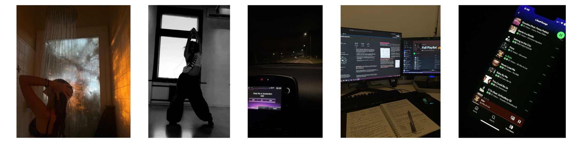
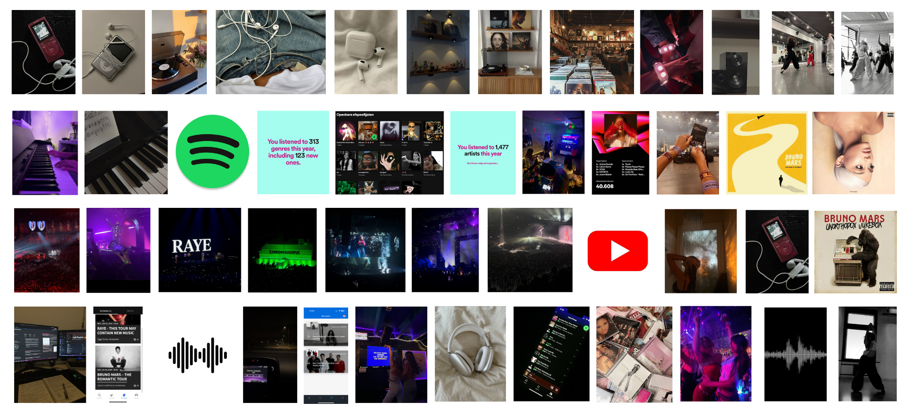
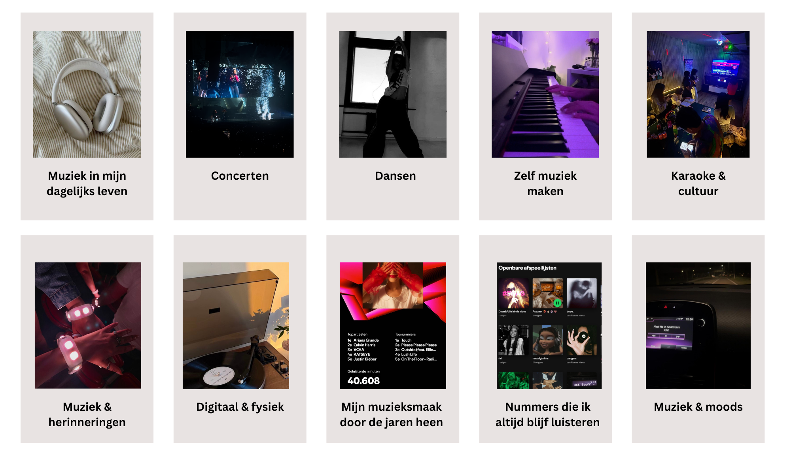

class: center, middle background-image: url(./images/background.png) <!-- In deze textarea kan je in Markdown de slides aanpassen, zie https://github.com/gnab/remark/wiki voor alle mogelijkheden! --> # My life through music 🎧 ### Visueel & inhoudelijk onderzoek voor mijn Digital Garden --- background-image: url(./images/background.png) <!-- https://nl.pinterest.com/pin/873557658972453484/!--> # Mijn onderwerp Mijn onderwerp is mijn persoonlijke beleving van muziek.</br> Muziek is een dagelijks onderdeel van mijn leven. Ik luister bijna altijd muziek: thuis, onderweg en tijdens verschillende momenten van mijn dag. Met mijn Digital Garden wil ik laten zien hoe ik muziek beleef en welke rol het in mijn leven speelt. <p></p> --- background-image: url(./images/background.png) # Mijn beleving van muziek Muziek komt op veel verschillende manieren terug in mijn leven. Ik luister niet alleen veel naar muziek, maar ik speel zelf piano, dans op muziek, ga graag naar concerten en zing graag. Ook verbind ik bepaalde muziek aan momenten, mensen en herinneringen. Mijn muzieksmaak is door de jaren heen veranderd en daardoor horen verschillende nummers en artiesten bij verschillende periodes van mijn leven. --- background-image: url(./images/background.png) # Inspiratie & verdieping - <strong>Walkman</strong></br> Door deze bron ben ik gaan kijken naar hoe muziek luisteren door de jaren heen is veranderd. Van apparaten zoals de Walkman naar de manier waarop ik nu bijna overal digitaal muziek luister.</br> https://www.sony.com/en/SonyInfo/design/bside/01_throwback_walkman/ - <strong>Van fysiek naar streaming</strong></br> Hier zag ik hoe muziek luisteren steeds digitaler is geworden. Dit bracht mij op het idee om zowel mijn digitale als fysieke manier van muziek luisteren mee te nemen.</br> https://newsroom.spotify.com/spotify-timeline/ - <strong>Muziek in het dagelijks leven</strong></br> Deze bron gaat over muziek tijdens dagelijkse activiteiten. Dit herkende ik bij mezelf, omdat ik bijvoorbeeld muziek luister tijdens het autorijden, douchen en studeren.</br> https://academic.oup.com/book/53643/chapter-abstract/422151266 --- background-image: url(./images/background.png) # Inspiratie & verdieping - <strong>Muziek & emoties</strong></br> Door deze bron ben ik meer gaan nadenken over de invloed van muziek op hoe je je voelt. Hierdoor kwam ik op het idee om verschillende moods mee te nemen in mijn Digital Garden. </br> https://pubmed.ncbi.nlm.nih.gov/18837617/ - <strong>Muziek & herinneringen</strong></br> Deze bron liet mij nadenken over hoe muziek herinneringen kan oproepen. Ik merkte dat ik zelf ook veel nummers verbind aan bepaalde mensen, momenten en periodes.</br> https://pubmed.ncbi.nlm.nih.gov/17965981/ - <strong>Karaoke & cultuur</strong></br> Door deze bron ben ik meer gaan kijken naar de verbinding tussen karaoke, cultuur en identiteit. Dit vond ik interessant omdat karaoke voor mij ook verbonden is aan mijn Filipijnse cultuur en opvoeding.</br> https://onlinelibrary.wiley.com/doi/10.1111/j.1753-9137.2009.01033.x --- background-image: url(./images/background.png) # Inspiratie & verdieping - <strong>Concerten</strong></br> Deze bron liet mij nadenken over het verschil tussen live muziek en muziek gewoon thuis luisteren. Concerten zijn voor mij een groot onderdeel van hoe ik muziek beleef en wil ik daarom meenemen.</br> https://www.nature.com/articles/s41598-026-38194-3 - <strong>Dansen & muziek</strong></br> Deze bron gaat onder andere over muziek, bewegen en verbinding. Hierdoor ben ik dansen ook gaan zien als een aparte manier waarop ik zelf muziek beleef.</br> https://www.frontiersin.org/journals/psychology/articles/10.3389/fpsyg.2014.01096/full - <strong>Zelf muziek maken</strong></br> Door deze bron ben ik ook gaan kijken naar actief muziek maken in plaats van alleen luisteren. Dit past bij mijn eigen beleving omdat ik zelf piano speel.</br> https://pmc.ncbi.nlm.nih.gov/articles/PMC13353040/ --- background-image: url(./images/background.png) class: center, middle # Mijn visuele verzameling <p></p> <!-- bronnen afbeeldingen: https://nl.pinterest.com/pin/669347563406465982/ https://nl.pinterest.com/pin/140806234906052/ https://nl.pinterest.com/pin/357965870408137894/ https://nl.pinterest.com/pin/131308145381764828/ https://nl.pinterest.com/pin/301319031299833185/ https://nl.pinterest.com/pin/26599454046036725/ https://nl.pinterest.com/pin/330451691432513760/ https://nl.pinterest.com/pin/26458716564218485/ https://nl.pinterest.com/pin/21814379442304603/ https://nl.pinterest.com/pin/79376012180472031/ https://nl.pinterest.com/pin/7107311908356616/ https://nl.pinterest.com/pin/17029304837933706/ https://nl.pinterest.com/pin/1688918603411530/ https://nl.pinterest.com/pin/11892386513764968/ https://nl.pinterest.com/pin/60024607528560588/ https://nl.pinterest.com/pin/364580532348726077/ https://nl.pinterest.com/pin/985231164920326/ https://nl.pinterest.com/pin/1055599909319093/ https://nl.pinterest.com/pin/969822100983445325/ https://nl.pinterest.com/pin/524247212895434627/ https://nl.pinterest.com/pin/345299496455159007/ https://nl.pinterest.com/pin/53269208090321041/ https://nl.pinterest.com/pin/14496030044753788/ https://nl.pinterest.com/pin/492649954915533/ ! --> --- background-image: url(./images/background.png) # Wat valt mij op? Wat mij vooral opvalt, is dat muziek bij mij bijna altijd verbonden is aan wat ik aan het doen ben. Ik dans erop, zing erop, studeer met muziek en eigenlijk staat er bijna altijd wel muziek aan in mijn kamer of waar ik ook ben. Daarnaast merk ik dat muziek op veel verschillende manieren in mijn leven voorkomt. - instrumenten bespelen - digitaal - vinyls Mijn beleving van muziek is dus zowel digitaal als fysiek en muziek is eigenlijk op heel veel momenten in mijn dagelijks leven aanwezig. --- background-image: url(./images/background.png) class: center, middle # Mogelijke subonderwerpen <p></p> --- background-image: url(./images/background.png) class: center, middle # Introtekst <strong>Wat wil ik vertellen?</strong></br> Ik wil laten zien hoe groot de rol van muziek eigenlijk is in mijn dagelijks leven. Niet alleen wat ik luister, maar ook wat ik met muziek doe, welke herinneringen ik eraan verbind en hoe muziek terugkomt in mijn cultuur en verschillende periodes van mijn leven. <strong>Hoe wil ik dit vertellen?</strong></br> Ik wil hiervoor mijn eigen ervaringen en herinneringen gebruiken en deze combineren met afbeeldingen, muziek, artiesten, albums en andere content die bij bepaalde momenten uit mijn leven hoort. </br> Muziek staat bijna altijd aan in mijn leven. Ik luister, dans, speel piano, zing en ga naar concerten. Dit is hoe ik muziek beleef. --- background-image: url(./images/background.png) # Mijn eerste idee na onderzoek Na mijn onderzoek wil ik verder met een Digital Garden waarin je door verschillende delen van mijn muziekbeleving kunt ontdekken. Bijvoorbeeld mijn concerten, herinneringen, moods, karaoke, instrumenten en muziek uit verschillende periodes van mijn leven. <!-- Laat onderstaande staan anders breekt je presentatie -->